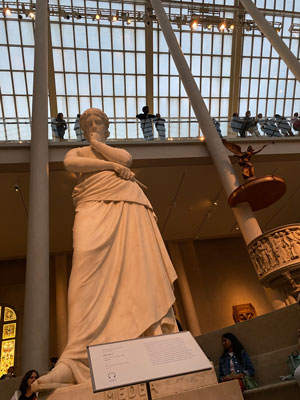
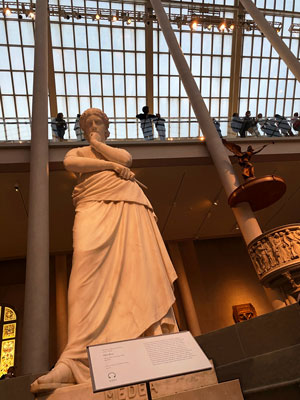
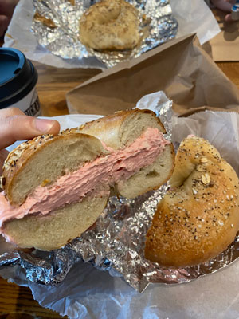
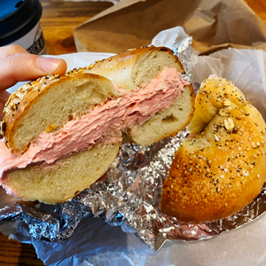
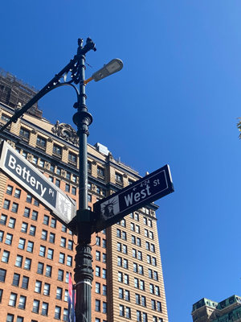
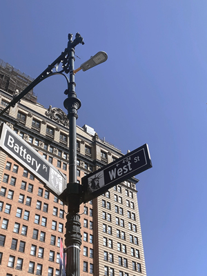
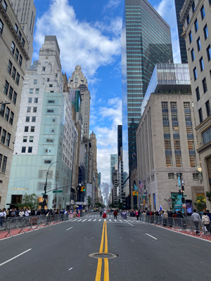
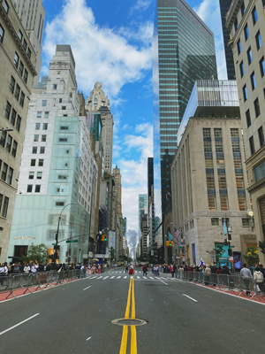

By varing point of view, this sculpture's face was captured by angling the shot from below. It was taken under the tranquil, dark lighting of the art museum. To enhance the visibility of the sculpture, the exposure was decreased.
Seohui's AENG 110 Class Photo Project |
|
| Home Photo Project Infographic Project Video Project | |
|
Explanation of Project The purpose of this project is taking digital photos using adequate resolution, effectvie lighting, and interesting composition. The processes of this project followed these steps; planning the composition, capturing of photos, editing photos, and organization on InDesign. | |
Original |
Edited |
|

By varing point of view, this sculpture's face was captured by angling the shot from below. It was taken under the tranquil, dark lighting of the art museum. To enhance the visibility of the sculpture, the exposure was decreased. |

The resulotuion was set to 300ppi. Auto tune was applied, and then the contrast was increased to highlight the details of the sculpture. To enhance focus on the sculp- ture, some people in the background were removed using content-aware color filling and spot healing brush. |
|

This photo was taken closed to the camera. The resolution of the photo was 72ppi. The cross-section of the bagel was positioned on the left side, following the rule of thirds. And the bagel is well-framed in the shot to em- phasize its presence. |

At first, the curve was adjusted to enhance brightness and add contrast to the photo. Then the saturation was increased to intensi- fy the colors, particulary the red color of the strawberry cream cheese in the bagel. This made the bagel looked more vibrant and more appetizing. The resolution was set to 300ppi, and the photo was cropped. |
|

The photo was captured in the bright sun- light. It was taken looking up at the sign from below, just a short distance away from the sign. The resolution was 72ppi. The rule of thirds was used in this photo by placing the subject on the left. |

The resolution became higher to 300ppi. A bit of cropping was done to remove leaves from photo. In order to remove unnecessary builiding, content-aware color was filled in that area instead. To give a vintage mood to the photo, low saturation was added. |
|

The moment of the parade and high build- ings were captured, using iPhone. Centering and leading lines were used in this photo. The resolution was 72ppi. |

Brightness and darkness were adjusted using curves in Photoshop. Resolution was set to 300ppi for clarity. To create the look of a photo taken by a film camera, the level of green and red in the color balance were increased. Then, noise was added. And as a final step, the contrased was lowered. |
|
© 2023 Seohui Lee |
|